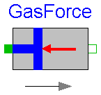

Information
Use the following settings:
experiment StopTime=0.2 Interval=0.002 Tolerance=1.E-8
Perform 'simulate' and then see animation in
Animation window.
Plot the following variables:
AngVelDegS: Angular velocity of motor shaft [rev/min]
x : position of cylinder [m]
press : pressure in cylinder [bar]
Parameters
| Name | Default | Description |
|---|
| D | 0.1 | |
| e | 0.05 | |
| L | 0.2 | |
| Load | 20 | |
Modelica definition
partial model Engine
extends Modelica.Icons.Example;
parameter Real D=0.1;
parameter Real e=0.05;
parameter Real L=0.2;
parameter Real Load=20;
constant Real pi=Modelica.Constants.pi;
constant Real PI=Modelica.Constants.pi;
// Only for compatibility reasons
output Real AngVelDegS;
output Real x;
output Real press;
output Real T;
output Real V;
output Real dens;
Parts.InertialSystem inertial(g=0);
Joints.Revolute r1(startValueFixed=true, qd(start=-157));
Joints.Prismatic cyl(n={-1,0,0});
Parts.FrameTranslation trans(r={sqrt((D/2 + L)^2 - e^2),-e,0});
Parts.ShapeBody piston(
r={0.1,0,0},
m=0.3,
I33=0.0001,
Shape="cylinder",
Width=0.05,
Height=0.05);
Parts.ShapeBody crank(
r={D/2,0,0},
Width=0.01,
Height=0.01,
Material={0,0,1,0.5});
GasForce gasForce(L=(sqrt((L + D/2)^2 - e^2) - sqrt((L - D/2)^2 - e^2)), d
=0.05);
Modelica.Mechanics.Rotational.Inertia flyWheel(J=0.0025);
Modelica.Mechanics.Rotational.BearingFriction torque(tau_pos=[0, Load]);
equation
connect(inertial.frame_b, r1.frame_a);
connect(inertial.frame_b, trans.frame_a);
connect(trans.frame_b, cyl.frame_a);
connect(cyl.frame_b, piston.frame_a);
connect(cyl.bearing, gasForce.flange_a);
connect(cyl.axis, gasForce.flange_b);
connect(flyWheel.flange_b, r1.axis);
connect(torque.flange_b, flyWheel.flange_a);
connect(r1.frame_b, crank.frame_a);
AngVelDegS = -r1.qd*60/(2*pi);
/*rev/min*/
x = gasForce.s_rel;
press = gasForce.press;
T = gasForce.T;
V = gasForce.V;
dens = gasForce.dens;
end Engine;

Parameters
| Name | Default | Description |
|---|
| L | | Length of cylinder [m] |
| d | | diameter of cylinder [m] |
| k0 | 0.01 | |
| k1 | 1 | |
| k | 1 | |
Modelica definition
model GasForce
extends Modelica.Mechanics.Translational.Interfaces.Compliant;
parameter SI.Length L "Length of cylinder";
parameter SI.Length d "diameter of cylinder";
parameter Real k0=0.01;
parameter Real k1=1;
parameter Real k=1;
constant Real pi=Modelica.Constants.pi;
constant Real PI=Modelica.Constants.pi;
// Only for compatibility reasons
SI.Position x;
SI.Density dens;
SI.Pressure press "cylinder pressure";
SI.Volume V;
SI.Temperature T;
SI.Velocity v_rel;
equation
x = 1 - s_rel/L;
v_rel = der(s_rel);
press = if v_rel < 0 then (if x < 0.987 then 177.4132*x^4 - 287.2189*x^3 +
151.8252*x^2 - 24.9973*x + 2.4 else 2836360*x^4 - 10569296*x^3 + 14761814*x
^2 - 9158505*x + 2129670) else (if x > 0.93 then -3929704*x^4 + 14748765*x^
3 - 20747000*x^2 + 12964477*x - 3036495 else 145.930*x^4 - 131.707*x^3 +
17.3438*x^2 + 17.9272*x + 2.4);
f = -1.0E5*press*pi*d^2/4;
V = k0 + k1*(1 - x);
dens = 1/V;
press*V = k*T;
end GasForce;
HTML-documentation generated by Dymola Tue Dec 10 16:34:39 2002
.